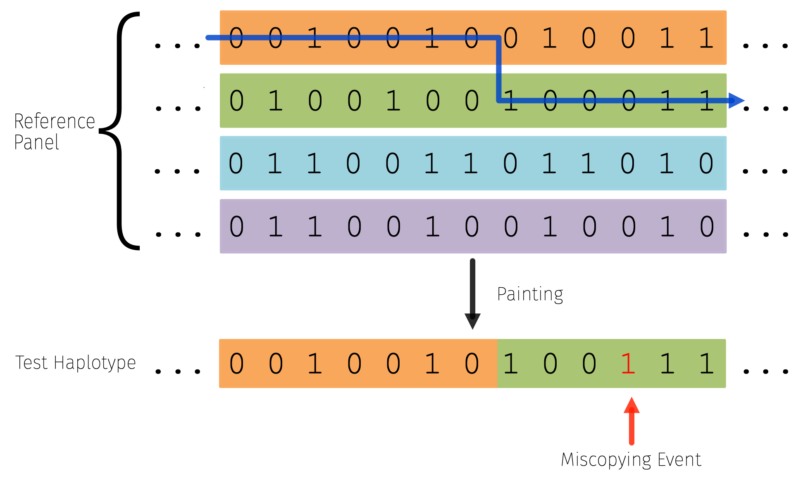
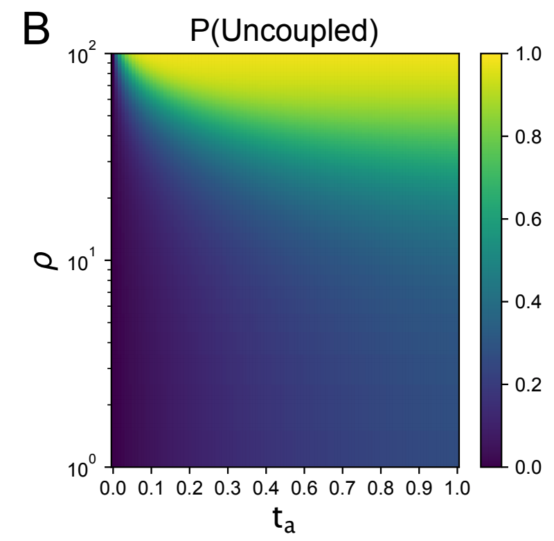
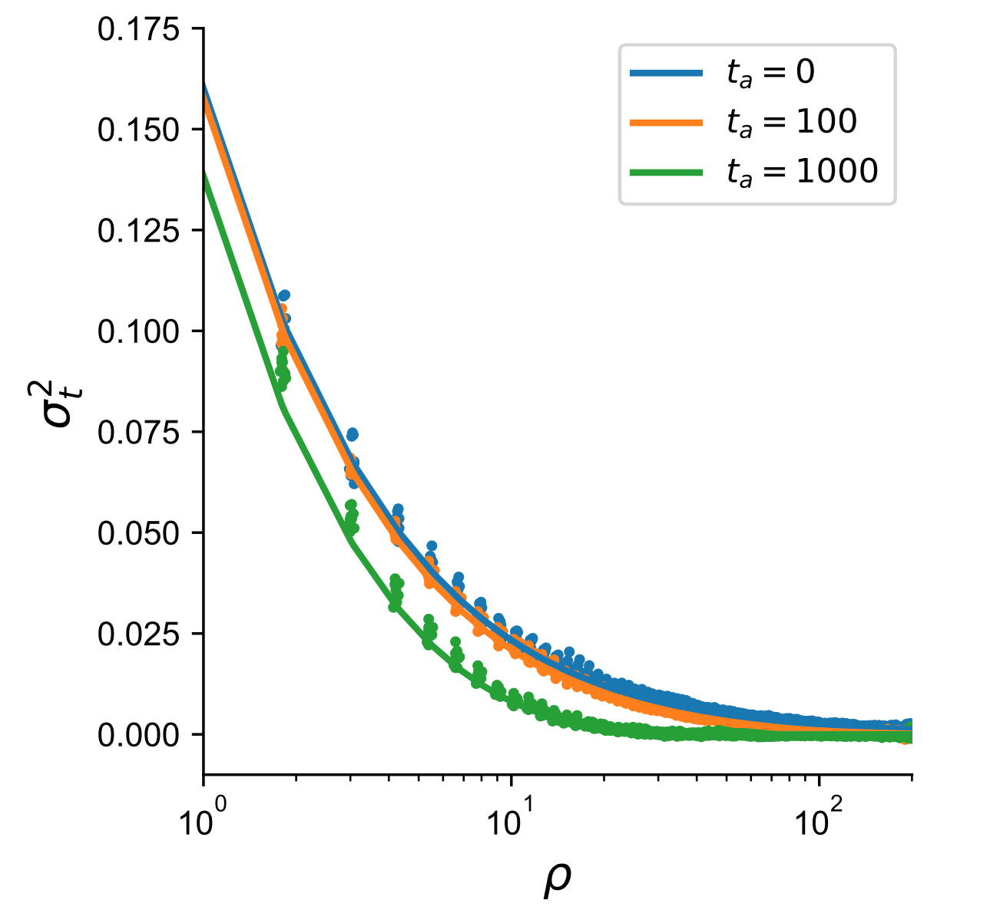
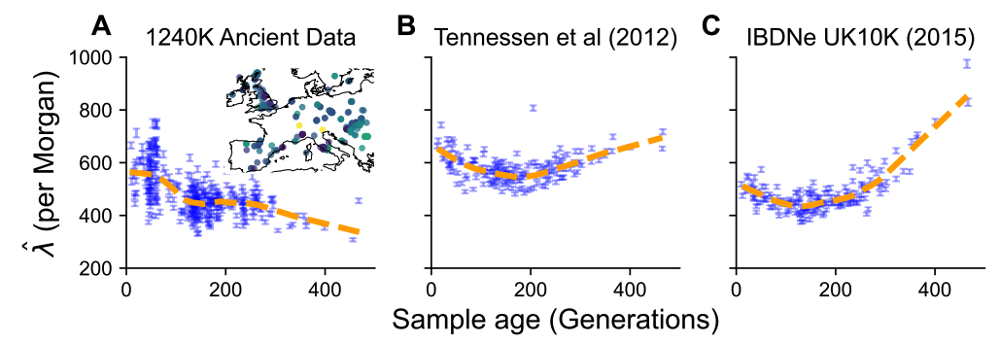
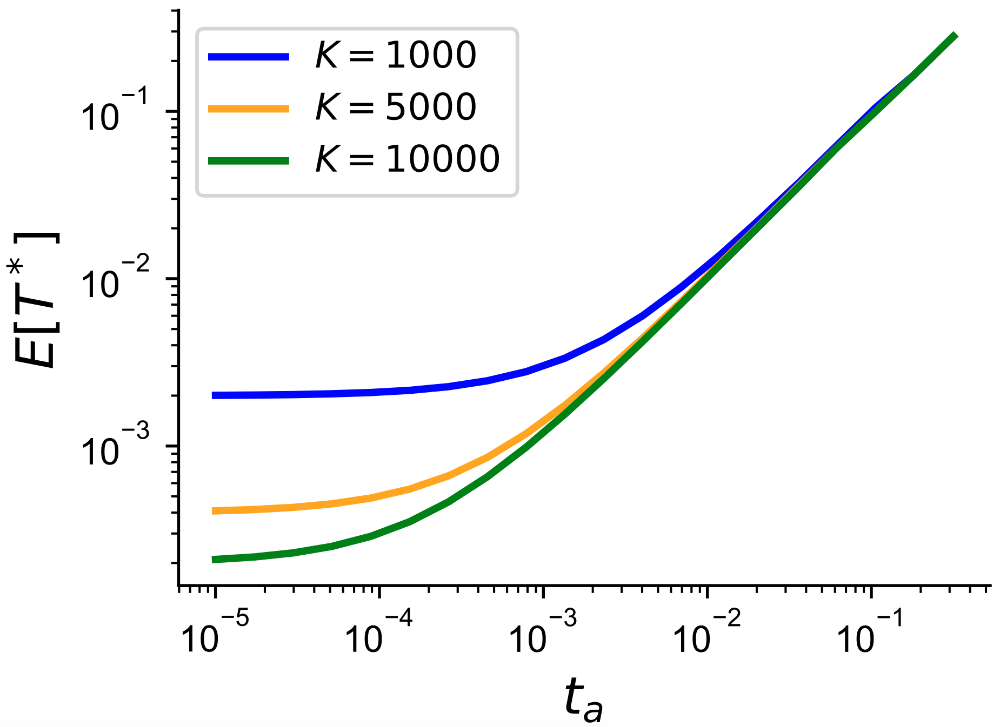

Ancient DNA and LD¶
I wanted to take this time to highlight a couple of recent results from our paper looking at time-stratified sampling and linkage disequilibrium in ancient DNA. I should note that the post here assumes some familiarity with coalescent theory and I’ve tried my best to provide mostly intuitive reasoning behind some of our main findings.
Inspiration and Starting Points¶
Linkage disequilibrium is a fundamental signal that we observe in population genomic data, providing signal for genome-wide association study resolution, estimating the extent of admixture in humans, and the extent of natural selection. A major point of inspiration for this research was from Ohta and Kimura and Gil McVean’s previous work on expectations of linkage disequilibrium (LD), or the covariation in alleles at different loci. The work from McVean in particular was able to relate the covariances in coalescent times at two loci to an approximation of LD:
where \(t^{(1)}_{ij}\) is the coalescent time between haplotypes i and j at the first locus, and haplotypes i and j share the same allelic state. I’ve eliminated some of the subsequent math and nice derivation, but the key insight here is that we can draw the connection very generally between LD (an observable quantity in data) with properties of the genealogy at two loci (something about the process we don’t observe). A major benefit is that since the genealogical properties are agnostic to the evolutionary model considered, if we can compute the covariances in coalescent times under a model, then we can obtain approximations of LD. The scenarios explored in the current literature all dealt with samples from the same points in time, so we wanted to see if we could translate this to a case with samples from different points in time.
Another key model that is central to how researchers model haplotype data today is the haplotype-copying or Li and Stephens model, which models a focal haplotype as a mosaic of other “template” haplotypes. The beauty of this approach is that you can approximate the full likelihood of the data (under mutation and recombination parameters), by looking at products of these conditional likelihoods, and it also has a natural interpretation of copying from a genealogical closest neighbor in the panel.
{kind=link}
(based on a figure by Zhu et al).
This is the standard model employed in imputation and phasing frameworks in statistical genetics to perform inference, so understanding its behavior in ancient samples is useful to set expectations for the models behavior at different time-depths (see Gamba et al for a nice empirical assessment of this problem though).
Therefore, the two key questions (at a high-level) we wanted to ask were:
Can we relate joint genealogical properties (e.g. covariance in coalescent times) in models with samples from different points in time to observable LD statistics?
How does modeling an ancient focal sample with a modern panel behave under the haplotype copying model? Do we shift between copying from different template haplotypes more or less often?
We provide an outline of our major results below.
The impact of time-separation on genealogical history at two loci¶
To keep this blogpost on the shorter side, we’ll start with the intuition under constant size and just two haplotype samples separated by \(t_a\) coalescent units. This consideration of a “two-locus, two-sample” system is the simplest type of system we could consider in models with recombination, and provides a nice set of analytical results as well. We found that time separation increases the expected branch length (at a single-locus) by a factor of \(t_a\) coalescent units, which is more branch length on which recombination events can occur*.
In Figure 1b of our paper we show that by increasing time-separation, for a constant recombination rate the probability of being in the “uncoupled” state at time \(t_a\) (where one lineage is ancestral to each of the two loci) is higher. The uncoupled state can only occur if a recombination event has occurred prior to \(t_a\) on the modern lineage, so this probability is a direct reflection of that.
{kind=link}
"uncoupled" for a population-scaled
recombination rate and sampling time.
This increase in the probability of lineages becoming uncoupled also affects joint patterns of variation such as the correlation in pairwise differences between two loci. Patterns of variation operate effectively under the same intuition - as time separation increases, the probability of recombination increases due to increased branch length, which then decreases the correlation in patterns of variation. Figure 2 in our paper verifies that we observe a decrease in the correlation in pairwise differences, and that the rate of decay as a function of recombination distance is also affected by \(t_a\) varying from \(O(\rho^{-1})\) with two modern samples to \(O(\rho^{-2})\) with very old samples, which we found to be an interesting mathematical result (see Figure 3 in our paper for more of an exploration of the correlation in pairwise differences between varying demographies.)
The other statistic that we focused our effort on is the normalized product of \(D^{(0)}D^{(t)}\), where \(D = p_{AB} - p_Ap_B\) or the covariance in allelic states in a sample (the superscript refers to the timepoints). We derived how this product behaves in a model of constant population size:
For confirmation, we set \(t_a = 0\) and we obtain the approximation for \(\sigma^2_d\) for two contemporary haplotypes (e.g. equation 12 in McVean 2002). In simulations, we find that the product of LD is quite similar across different population scaled recombination rates (under the same population size) except for very large time-separations.
{kind=link}
across different time-stratified
sampling levels (in generations).
Copying Patterns in Simulated and Real Haplotype Data¶
When summarizing copying patterns, we had to choose a summary that was representative of the length of the copied blocks from the panel. This is important becuase it provides a genetic distance scale over which we can reliably expect to have accurate prediction of an unobserved variant due to linkage disequilibrium (e.g. genotype imputation). We focused most of our effort on the inferred “copying jump rate”, \(\lambda\), in the haplotype copying model. We focused on this parameter because it is inversely related to the expected copying block length, \(B\) , where \(\mathbb{E}[B] = 1/\hat{\lambda}\) in Morgans.
We find that as the age of the focal sample increases, that in most cases the jump rate also increases, indicating that haplotype copying blocks generally get smaller for ancient samples (it’s useful to consider that \(\lambda \sim 1000\) means an average block-size of around 0.1 centimorgans, which is above the threshold for array capture products in ancient DNA).
One difference is in the case with extreme population growth, where we find that the copying jump rate actually decreases (making copied blocks longer) until the point of growth. We can think about how this might happen from intuition based on the extreme of a “star-like” genealogy (which extreme instantaneous growth should approximate). In a star-like genealogy, each mutation occurring will be unique to a sample making the number of shared mutations quite small and therefore the haplotype must be shared for longer in the copying model. For samples that are closer to the onset of growth there are lower opportunities for recombination to affect this ancient lineage since it has a shorter branch length, leading to the decrease of the copying jump rate as sample age increases.
{kind=link}
We also sought to apply the copying model to real data from 334 ancient male X-chromosomes in publicly available ancient DNA data from Europe. We chose to use male X-chromosomes because they are haploid so we did not need to statistically phase them. However, we do clarify that this is a limitation of our approach and our interpretation is restricted to male-specific demography.
The most surprising finding in our analysis was that for samples within 500 generations that there is a substantial decrease in the haplotype copying jump rate in the real data that is not captured by simulating under previously inferred models of demographic history from modern samples (see above). We hypothesize in the paper that this could be due to an over-estimation of past population sizes due to fragmented populations and that it might warrant some further investigation. Indeed population structure can have the effect of creating excess heterozygosity (see Figure S6 in Li & Durbin for an example of this). We shouldn’t be terribly surprised by this fact, after all ancient DNA has shown that historical population structure is quite substantial (and very interesting!), but this does provide a useful summary to look at potential discrepancies with inferences from modern genomes alone.
Outlook & Future Work¶
There are a couple of interesting points that are natural next questions in this area that may (or may not) be useful:
What modes of ancient population structure can lead to similar decreases in the copying jump rate? We didn’t explore this in the current paper as its asking a fundamentally different question on the consistency of specific models with data, but it would be nice to have an understanding of whether more realistic models of structure followed by growth could capture this effect.
Can the normalized product of \(D^{(0)} D^{(t)}\) across all pairs of time-points be used to estimate recent population demographic history? The data summary would be a \(T\times T\times L\) tensor of joint LD estimates across all timepoints at \(L\) different recombination bins, and one could employ a moment-based fitting procedure for the scaling factor of \(N_e\). This might be more applicable in settings where there is no influence of population structure, but could be an interesting in-silico experiment.
In thinking about two-locus genealogies, we primarily wanted to see what we could do with an extension of the simple two-locus, two-sample model in a constant-sized population for two reasons: (1) the previous results are all analytical and (2) the system still provides insight on properties in data that we could observe. However, it’s not infeasible to think about how these two-locus systems might behave under both spatial and temporal sampling under an island or stepping-stone model. While analytical results might prove elusive and the model complexity increases exponentially with the number of demes, it may be possible that numerical results may still be obtainable. Also with recent insights into the applicaiton of multi-variate phase-type distributions in population genetics (Hobolth et al. 2019) , it could be possible to describe the full joint distribution of coalescent times rather than just joint moments.
Personal Highlight¶
I’ve frequently enjoyed asking friends and colleagues what they’ve enjoyed most about a particular product of their work. Often what the authors find the most interesting or important doesn’t necessarily become the most important facet in the paper’s narrative. In this case, it was actually the material in Appendix 3 on computing the first coalescent time for an ancient sample into a panel of modern individuals. The time to first coalescence is a good measure of the branch length only subtending the ancient sample, which is useful for considering the expected number of private mutations and recombination events that can affect the ancient sample. This branch grows longer as the sample grows more ancient so intuitively makes sense with the increase in the jump rate that we observe under these conditions.
It also provided a useful intuition for how as the panel size grows, we are increasingly more able to capture more and more recent relatedness amongst tested haplotypes and the panel (e.g. you’re more and more likely to find a second cousin or closer relationship as the panel size increases). This is why phasing and imputation work really well in the current era of large sample sizes. In this derivation I was particularly interested in the point at which samples would be ancient enough that there is minimal difference in the coalescence time (suggesting a limit to imputation/phasing accuracy as well). Under a model of constant-size, we saw exactly this relationship, which is that fleetingly joyous intersection of intuition and validation that researchers are after!
{kind=link}
with a lineage ancestral to the modern panel.
If you’ve made it all the way down here and still find this work interesting, feel free to drop me a line via Twitter or email!